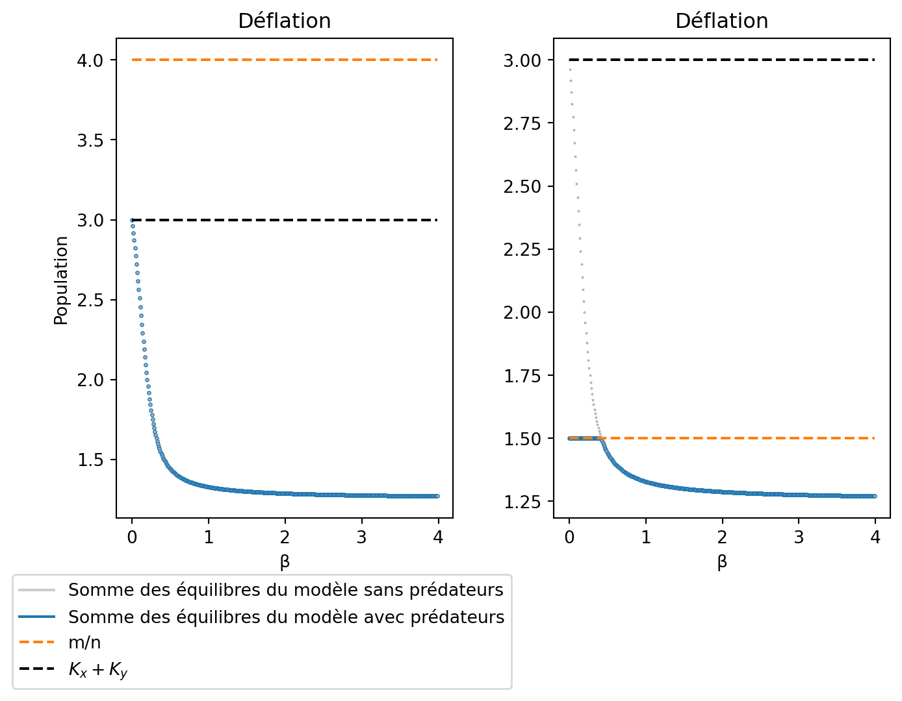
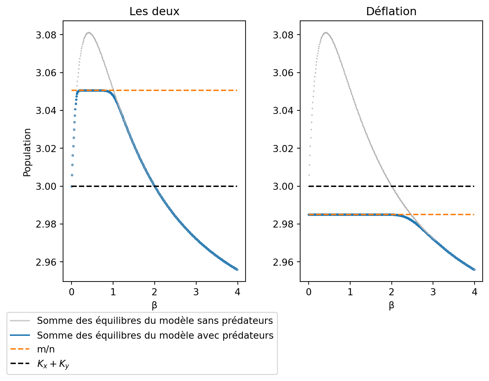

Code
import numpy as np
import matplotlib.pyplot as plt
from scipy.integrate import odeint
import plotly.express as pxModules à importer :
import numpy as np
import matplotlib.pyplot as plt
from scipy.integrate import odeint
import plotly.express as pxCe modèle est un modèle de prédation de Lotka-Volterra où les proies se répartissent en deux structures et les prédateurs diffusent librement entre les deux strcutures.
Nous partirons pour être plus général du postulat que la prédation et les naissances sont diférentielles entre les structures mais certaines analyses se baseront sur une égalité des naissances par exemple.
Nous considérons le modèle suivant d’après Freedman (1977):
\left\{\begin{array}{l} \dot x = r_xx\left(1-\frac{x}{K_x}\right)+\beta\left(\frac{y}{\gamma_y}-\frac{x}{\gamma_x}\right)-p_xxz \\ \dot y = r_yy\left(1-\frac{y}{K_y}\right)+\beta\left(\frac{x}{\gamma_x}-\frac{y}{\gamma_y}\right)-p_yyz \\ \dot z = z\left(n_xx+n_yy - m\right) \end{array}\right. \tag{1}
avec:
- r_x le taux de croissance de x dans la culture,
- r_y le taux de croissance de y dans l’augmentorium,
- K_x la capacité maximale de la culture,
- K_y la capacité maximale de l’augmentorium,
- \beta la force de migration,
- \gamma_x le taux d’assymétrie de la migration culture vers augmentorium,
- \gamma_y le taux d’assymétrie de la migration augmentorium vers culture,
- p_x,p_y la prédation de z sur x ou y,
- n_x,n_y le taux de conversion proie prédateur dans la culture ou l’augmentorium (naissance due à la prédation),
- m la mortalité des prédateurs z.
On a donc maintenant un espace structuré en deux zones, s’échangeant assymétriquement de la population (qui grandit logisitiquement), le tout controlé par une population de prédateurs ne chassant et ne se reproduisant pas de la même manière dans les deux zones.
Si on veut simuler une condition d’augmentorium alors on posera p_y > p_x et n_y>n_x.
En effet l’augmentorium est un lieu propice au développement des individus que ce soit les prédateurs ou les ravageurs.
Ainsi la prédation exercé sur les ravageurs est plus forte dans l’augmentorium et les naissances des prédateurs sont plus fortes dans l’augmentorium que dans la culture.
Dans la suite on restera général pour analyser le modèle.
On va encore une fois simuler comment se comporte les trois populations en fonction du temps.
Le code commenté est acessible dans la boite cachée ci dessous:
#Définition du modèle avec prédateurs:
def a(etat, t, param):
x,y,z=etat
rx,Kx,ry,Ky,gx,gy,b,px,py,nx,ny,m = param
xdot,ydot,zdot=[rx*x*(1-x/Kx)+b*(y/gy-x/gx)-px*z*x,ry*y*(1-y/Ky)+b*(x/gx-y/gy)-py*y*z,z*(nx*x+ny*y-m)]
return [xdot,ydot,zdot]
#Paramètres Simulation 1 :
rx1=0.5
ry1=1
Kx1=2
Ky1=1
gx1=0.5
gy1=3
b1=1
px1=0.5
py1=1
nx1=0.5
ny1=1
m1=0.5
param_a1=np.array([rx1,Kx1,ry1,Ky1,gx1,gy1,b1,px1,py1,nx1,ny1,m1])
#Paramètres Simulation 2:
rx2=0.5
ry2=1
Kx2=2
Ky2=1
gx2=0.5
gy2=3
b2=1
px2=0.5
py2=1
nx2=0.5
ny2=1
m2=2
param_a2=np.array([rx2,Kx2,ry2,Ky2,gx2,gy2,b2,px2,py2,nx2,ny2,m2])
#Temps d'intégration 1,2:
t3=np.arange(0,90,0.01)
t4=np.arange(0,50,0.01)
#Condition initiale de 1,2:
x0=2
y0=0
z0=0.5
c0=np.array([x0,y0,z0])
#Simulation 1,2:
s3=odeint(a,c0,t3,args=(param_a1,))
s4=odeint(a,c0,t4,args=(param_a2,))
#Plot de la figure:
fig,ax = plt.subplots(1,2,figsize=(8,4))
fig.suptitle('Simulation du modèle d\'augmentorium')
plt.subplots_adjust(hspace=0.4)
#Plot de l'axe 1:
ax[0].plot(t3,s3[:,0],color='C0',label='Ravageurs dans la culture')
ax[0].plot(t3,s3[:,1],color='C1',label='Ravageurs dans l\'augmentorium')
ax[0].plot(t3,s3[:,2],color='C6',label='Prédateurs totaux')
#Plot de l'axe 2:
ax[1].plot(t4,s4[:,0],color='C0',label='Ravageurs dans la culture')
ax[1].plot(t4,s4[:,1],color='C1',label='Ravageurs dans l\'augmentorium')
ax[1].plot(t4,s4[:,2],color='C6',label='Prédateurs totaux')
#Légendes et titres:
ax[0].set_ylabel('Population, x,y,z')
ax[0].legend(fontsize=8)
ax[0].grid()
ax[0].set_xlabel('Temps, t')
ax[0].set_ylim(top=2,bottom=-0.05)
ax[0].set_title('Coexistence des trois populations',fontsize=7.5)
ax[1].set_xlabel('Temps, t')
ax[1].set_ylabel('Population, x,y,z')
ax[1].legend(fontsize=8)
ax[1].grid()
ax[1].set_ylim(top=2,bottom=-0.05)
ax[1].set_title('Disparition des prédateurs, maintien des ravageurs',fontsize=7.5);Les profils de dynamique se répartissent en deux grandes catégories. Ceux où la population de prédateurs survit et celle où elle disparaît. Il semble donc que le système possède un équilibre stable qui varie selon les paramètres du système.
Pour de faibles temps t on observe des oscillations à la Lotka-Volterra.
Le profil de la dynamique de la population sans prédateurs est similaire au modèle avec seulement les proies et la migration assymétrique. On verra dans la suite que ces deux modèles sont complètement confondus (sans prédateurs).
Pour tracer l’espace d’état on pose toutes les variations égales à 0 (situation d’équilibre) :
\left\{\begin{array}{l} 0 = r_xx^*\left(1-\frac{x^*}{K_x}\right)+\beta\left(\frac{y^*}{\gamma_y}-\frac{x^*}{\gamma_x}\right)-p_xx^*z^* \\ 0 = r_yy^*\left(1-\frac{y^*}{K_y}\right)+\beta\left(\frac{x^*}{\gamma_x}-\frac{y^*}{\gamma_y}\right)-p_yy^*z^* \\ 0 = z^*\left(n_xx^*+n_yy^* - m\right) \end{array}\right. \tag{2}
qui devient :
\left\{\begin{array}{l}
z^* = \frac{r_x}{p_x}\left(1-\frac{x^*}{K_x}\right)+\frac{\beta}{p_xx^*}\left(\frac{y^*}{\gamma_y}-\frac{x^*}{\gamma_x}\right)\\
z^* = \frac{r_y}{p_y}\left(1-\frac{y^*}{K_y}\right)+\frac{\beta}{p_yy^*}\left(\frac{x^*}{\gamma_x}-\frac{y^*}{\gamma_y}\right)\\
z^*=0 \lor n_xx^*+n_yy^*=m
\end{array}\right.
\tag{3}
On se retrouve avec deux surfaces et deux plans dont les intersections seront les équilibres. Voyons ceci avec une animation :
import IPython.display as display
fig01 = """
<iframe width="700" height="550" src="https://www.geogebra.org/classic/bw3wqnzg" style="border: 1px solid black"></iframe>
"""
display.HTML(fig01)En vert on a l’intersection entre la surface définie par \dot x =0 et les plans z=0 et n_xx+n_yy=m.
En rouge on a l’intersection entre la surface définie par \dot y =0 et les plans z=0 et n_xx+n_yy=m.
On a donc que l’intersection des courbes vertes et rouges sont les équilibres. Il est facile de voir qu’il n’en existe que trois différents dont un seul correspond à la coexistence des trois populations.
Si z=0 alors (1) devient:
\left\{\begin{array}{l}
\dot x = r_xx(1-\frac{x}{K_x})+\beta\left(\frac{y}{\gamma_y}-\frac{x}{\gamma_x}\right)\\
\dot y = r_yy(1-\frac{y}{K_y})+\beta\left(\frac{x}{\gamma_x}-\frac{y}{\gamma_y}\right)
\end{array}\right.
\tag{4}
qui est exactement le système considéré précedemment. Pour l’analyse de ses équilibres se référer à ceci.
On va donc s’intéresser uniquement à l’équilibre de coexistence qu’on notera (x^* , y^* , z^*).
Nous allons calculer pour différentes valeurs de \beta les valeurs de l’équilibre et leur stabilité.
En effet le calcul exact de l’équilibre pour un \beta quelconque est difficile, et on va donc partir de cas plus simple avant d’effectuer des simulations Python pour le cas quelconque.
On définit le système (2) par \mathbb{F(x,y,z,\beta)} : \mathbb{F(x,y,z,\beta)} = \left\{\begin{array}{l} \dot x = r_xx\left(1-\frac{x}{K_x}\right)+\beta\left(\frac{y}{\gamma_y}-\frac{x}{\gamma_x}\right)-p_xxz \\ \dot y = r_yy\left(1-\frac{y}{K_y}\right)+\beta\left(\frac{x}{\gamma_x}-\frac{y}{\gamma_y}\right)-p_yyz \\ \dot z = z\left(n_xx+n_yy - m\right) \end{array}\right.
de telle sorte que si on cherche l’équilibre pour \beta =0 alors on a:
\mathbb{F(x^*,y^*,z^*,0)} = 0
\Leftrightarrow
\left\{\begin{array}{l}
0 = r_xx^*\left(1-\frac{x^*}{K_x}\right)-p_xx^*z^* \\
0 = r_yy^*\left(1-\frac{y^*}{K_y}\right)-p_yy^*z^* \\
0 = z^*\left(n_xx^*+n_yy^* - m\right)
\end{array}\right.
\tag{5}
\Leftrightarrow
\left\{\begin{array}{l}
z^* = \frac{r_x}{p_x}\left(1-\frac{x^*}{K_x}\right) \\
z^* = \frac{r_y}{p_y}\left(1-\frac{y^*}{K_y}\right) \\
y^* = \frac{1}{n_y}\left(m-n_xx^*\right)
\end{array}\right.
\tag{6} et ainsi :
\frac{r_x}{p_x}\left(1-\frac{x^*}{K_x}\right) = \frac{r_y}{p_y}\left(1-\frac{m}{n_yK_y}+\frac{n_xx^*}{n_y}\right)
et donc :
x^*=\frac{K_x\left(r_yp_xm+r_xn_yp_yK_y-r_yn_yp_xK_y\right)}{r_xn_yp_yK_y+r_yn_xp_xK_x}
On déduit y^* et z^* avec leur définition d’après (6): \left\{\begin{array}{l} x^* = \frac{K_x\left(r_yp_xm+r_xn_yp_yK_y-r_yn_yp_xK_y\right)}{r_xn_yp_yK_y+r_yn_xp_xK_x} \\ y^* = \frac{K_y\left(r_yn_xp_xK_x+r_xp_ym - r_xn_xp_yK_x\right)}{r_xn_yp_yK_y+r_yn_xp_xK_x} \\ z^* = r_xr_y\left(\frac{n_xK_x+n_yK_y-m}{r_xn_yp_yK_y+r_yn_xp_xK_x}\right) \end{array}\right. \tag{7}
Le document de Freedman (1977) contient deux erreurs, un B_1 à la place d’un \beta_1 dans l’expression de y^* (respectivement x_{20} dans son article) et un p_y à la place d’un p_x dans l’expression de z^* (respectivement un \beta_2 à la place d’un \beta_1 selon ses notations).
Pour que ces équilibres soient positifs il faut que :
-\frac{mr_y}{K_yn_yp_y} < \frac{r_x}{p_x} - \frac{r_y}{p_y} < \frac{mr_x}{K_xn_xp_x} \tag{8}
et
n_xK_x+n_yK_y > m \tag{9}
On verra dans la suite que (9) est la condition permettant l’invasion des prédateurs lorsque les proies sont à leur équilibre.
Pour \beta petit on va utiliser l’égalité de Taylor pour trouver (x_*,y^*,z^*). On a alors, si on note (x^*(\beta),y^*(\beta),z^*(\beta)):
\left\{\begin{array}{l} x^*(0) = \frac{K_x\left(r_yp_xm+r_xn_yp_yK_y-r_yn_yp_xK_y\right)}{r_xn_yp_yK_y+r_yn_xp_xK_x}\\ y^*(0) = \frac{K_y\left(r_yn_xp_xK_x+r_xp_ym - r_xn_xp_yK_x\right)}{r_xn_yp_yK_y+r_yn_xp_xK_x}\\ z^*(0) = r_xr_y\left(\frac{n_xK_x+n_yK_y-m}{r_xn_yp_yK_y+r_yn_xp_xK_x}\right) \end{array}\right. \\
Soit \mathbb{F(x,y,z,\beta)} tel que : \mathbb{F(x,y,z,\beta)} = \left\{\begin{array}{l} r_xx\left(1-\frac{x}{K_x}\right)+\beta\left(\frac{y}{\gamma_y}-\frac{x}{\gamma_x}\right)-p_xxz \\ r_yy\left(1-\frac{y}{K_y}\right)+\beta\left(\frac{x}{\gamma_x}-\frac{y}{\gamma_y}\right)-p_yyz \\ z\left(n_xx+n_yy - m\right) \end{array}\right. \\ On veut ainsi résoudre : \mathbb{F\left(\mathcal{x}^*(\beta) , \mathcal{y}^*(\beta) , \mathcal{z}^*(\beta) , \beta\right)}=0
or, d’après la formule de Taylor on a à l’ordre 1 en dimension 4 on a:
\mathbb{F\left(\mathcal{x}^*(\beta) , \mathcal{y}^*(\beta) , \mathcal{z}^*(\beta) , \beta\right)}=\mathbb{F\left(\mathcal{x}^*(\mathcal{0}) , \mathcal{y}^*(\mathcal{0}) , \mathcal{z}^*(\mathcal{0}) , \mathcal{0}\right)} + \\ \frac{\partial \mathbb{F}}{\partial \beta}\left(\mathcal{x}^*(\mathcal{0}) , \mathcal{y}^*(\mathcal{0}) , \mathcal{z}^*(\mathcal{0}) , \mathcal{0}\right)\beta + \mathbb{J}\tiny{\mathbb{F\left(\mathcal{x}^*(\mathcal{0}) , \mathcal{y}^*(\mathcal{0}) , \mathcal{z}^*(\mathcal{0}) ,\mathcal{0}\right)}}\small\begin{pmatrix} \mathcal{x}^*(\beta) - \mathcal{x}^*(\mathcal{0}) \\ \mathcal{y}^*(\beta) - \mathcal{y}^*(\mathcal{0}) \\ \mathcal{z}^*(\beta) - \mathcal{z}^*(\mathcal{0}) \end{pmatrix} + o(\beta) \tag{10} \Leftrightarrow \begin{pmatrix} \mathcal{x}^*(\beta) \\ \mathcal{y}^*(\beta) \\ \mathcal{z}^*(\beta) \end{pmatrix} = \begin{pmatrix} \mathcal{x}^*(\mathcal{0}) \\ \mathcal{y}^*(\mathcal{0}) \\ \mathcal{z}^*(\mathcal{0}) \end{pmatrix} - \mathbb{J^{\mathcal{-1}}}\tiny{\mathbb{F\left(\mathcal{x}^*(\mathcal{0}) , \mathcal{y}^*(\mathcal{0}) , \mathcal{z}^*(\mathcal{0}) ,\mathcal{0}\right)}} \small\frac{\partial \mathbb{F}}{\partial \beta}\left(\mathcal{x}^*(\mathcal{0}) , \mathcal{y}^*(\mathcal{0}) , \mathcal{z}^*(\mathcal{0}) , \mathcal{0}\right)\beta + o(\beta)
On a, \frac{\partial \mathbb{F}}{\partial \beta}\left(\mathcal{x}^*(\mathcal{0}) , \mathcal{y}^*(\mathcal{0}) , \mathcal{z}^*(\mathcal{0}) , \mathcal{0}\right)\beta = \begin{pmatrix} -\frac{\mathcal{x}^*(\mathcal{0})}{\gamma_x}+\frac{\mathcal{y}^*(\mathcal{0})}{\gamma_y}\\\frac{\mathcal{x}^*(\mathcal{0})}{\gamma_x}-\frac{\mathcal{y}^*(\mathcal{0})}{\gamma_y}\\ 0\end{pmatrix} .
et, \mathbb{J}\small{\mathbb{F\left(\mathcal{x}^*(\mathcal{0}) , \mathcal{y}^*(\mathcal{0}) , \mathcal{z}^*(\mathcal{0}) ,\mathcal{0}\right)}} = \begin{pmatrix} -\frac{r_xx^*(0)}{K_x} & 0 & -p_xx^*(0) \\ 0 & -\frac{r_yy^*(0)}{K_y} & -p_yy^*(0) \\ n_xz^*(0) & n_yz^*(0) & 0 \end{pmatrix}
il est alors facile de calculer que, det(\mathbb{J}) = -x^*(0)y^*(0)z^*(0)\left(\frac{r_xn_yp_y}{K_x}+\frac{r_yn_xp_x}{K_y}\right) \ne 0
La jacobienne est donc bien inversible et on peut la calculer (méthode des cofacteurs) ce qui donne : \mathbb{J^{\mathcal{-1}}}\tiny{\mathbb{F\left(\mathcal{x}^*(\mathcal{0}) , \mathcal{y}^*(\mathcal{0}) , \mathcal{z}^*(\mathcal{0}) ,\mathcal{0}\right)}} =\small \frac{1}{\frac{r_xp_yn_y}{K_x}+\frac{r_yp_xn_x}{K_y}} \begin{pmatrix} -\frac{p_yn_y}{x^*(0)} & \frac{p_xn_y}{y^*(0)} & \frac{r_yp_x}{z^*(0)K_y} \\ \frac{p_yn_x}{x^*(0)} & -\frac{p_xn_x}{y^*(0)} & \frac{r_xp_y}{z^*(0)K_x} \\ -\frac{r_yn_x}{x^*(0)K_y} & -\frac{r_xn_y}{y^*(0)K_x}& -\frac{r_xr_y}{z^*(0)K_xK_y} \end{pmatrix} \tag{11}
En mettant en œuvre le calcul on trouve : \left\{\begin{array}{l} x^*(\beta) = x^*(0) - \frac{\beta n_yK_xK_y\left(\frac{y^*(0)}{\gamma_y}-\frac{x^*(0)}{\gamma_x}\right)\left(\frac{p_y}{x^*(0)}+\frac{p_x}{y^*(0)}\right)}{K_yr_xp_yn_y + K_xr_yp_xn_x} + o(\beta)\\ y^*(\beta) = y^*(0) - \frac{\beta n_xK_xK_y\left(\frac{y^*(0)}{\gamma_y}-\frac{x^*(0)}{\gamma_x}\right)\left(\frac{p_y}{x^*(0)}+\frac{p_x}{y^*(0)}\right)}{K_yr_xp_yn_y + K_xr_yp_xn_x} + o(\beta)\\ z^*(\beta) = z^*(0) - \frac{\beta K_xK_y\left(\frac{y^*(0)}{\gamma_y}-\frac{x^*(0)}{\gamma_x}\right)\left(\frac{r_xn-y}{y^*(0)K_x}-\frac{r_yn_x}{x^*(0)K_y}\right)}{K_yr_xp_yn_y + K_xr_yp_xn_x} + o(\beta) \end{array}\right.\\ \tag{12}
(2) donne, en exprimant y^* en fonction de x^*: \left\{\begin{array}{l} z^* = \frac{r_x}{p_x}\left(1-\frac{x^*}{K_x}\right) + \frac{\beta}{p_x}\left(\frac{m}{n_y\gamma_y x^*}-\frac{n_x}{n_y\gamma_y}-\frac{1}{\gamma_x}\right) \\ z^* = \frac{r_y}{p_y}\left(1-\frac{m-n_xx^*}{n_yK_y}\right) + \frac{\beta n_y}{p_y}\left(\frac{x^*}{\gamma_x\left(m-n_xx^*\right)}-\frac{1}{n_y\gamma_y}\right) \\ y^* =\frac{1}{n_y}\left(m- n_xx^*\right) \end{array}\right. \tag{13}
On trouve x^* en faisant l’intersection entre les deux premières équations, on trouve y^* avec la troisième équation et z^* avec la première équation.
Pour calculer l’équilibre on utilise numpy:
#Calcul de x*:
x=np.polynomial.Polynomial([0,1])
#Polynome :
pol1= (m1-nx1*x)*x*rx1/px1*(1-x/Kx1) + (m1-nx1*x)*b1/px1*((m1-nx1*x)/(ny1*gy1) - x/gx1) - (m1-nx1*x)*x*ry1/py1*(1-(m1-nx1*x)/(ny1*Ky1)) - x*b1*ny1/py1*(x/gx1 - (m1-nx1*x)/(ny1*gy1))
#On utilise un masque booléen adapté à la situation --> solution réelle, positive et qui vérifie la condtion imposée par la troisième équation du système:
solx=pol1.roots()[(np.isreal(pol1.roots())) *(pol1.roots() > 0)*(pol1.roots()<m1/ny1)]
#Calcul de y*:
soly=1/ny1*(m1-nx1*solx)
#Calcul de z*:
solz=rx1/px1*(1-solx/Kx1) + b1/px1*(m1/(ny1*gy1*solx) -nx1/(ny1*gy1)- 1/gx1)Sans prédateurs (z=0) on a les mêmes équilibres que dans la partie précédente, la stabilité est donc la même que dans la partie précédente.
On va calculer pour différentes valeurs de \beta la stabilité.
La jacobienne du système est: \mathbb{J_{\mathcal{x^*_2},\mathcal{y^*_2},\mathcal{z^*_2},\mathcal{0}}} = \begin{pmatrix} -\frac{r_xx_2^*(0)}{K_x} & 0 & -p_xx_2^*(0) \\ 0 & -\frac{r_yy_2^*(0)}{K_y} & -p_yy_2^*(0) \\ n_xz_2^*(0) & n_yz_2^*(0) & 0 \end{pmatrix}
En calculant le polynôme caractéristique on en déduit que toutes les parties réelles des valeurs propres sont négatives et que donc l’équilibre est stable. La preuve est faite par Freedman dans son théorème 4.1.
\mathbb{J_{\mathcal{x^*},\mathcal{y^*},\mathcal{z^*},\mathcal{\beta}}} = \begin{pmatrix} -\frac{r_xx^*(0)}{K_x} -\frac{\beta}{\gamma_x} & \frac{\beta}{\gamma_y} & -p_xx^*(0) \\ \frac{\beta}{\gamma_x} & -\frac{r_yy^*(0)}{K_y}-\frac{\beta}{\gamma_y} & -p_yy^*(0) \\ n_xz^*(0) & n_yz^*(0) & 0 \end{pmatrix} = \mathbb{J_{\mathcal{x^*},\mathcal{y^*},\mathcal{z^*},\mathcal{0}}} + \beta \begin{pmatrix} -\frac{1}{\gamma_x} & \frac{1}{\gamma_y} & 0 \\ \frac{1}{\gamma_x} & -\frac{1}{\gamma_y} & 0 \\ 0 & 0 & 0 \end{pmatrix}
Comme \beta est petit on a la matrice qui est petite et qui n’influence pas le signe des valeurs propres. Donc l’équilibre est encore stable.
Dans cette partie on va distinguer les cas où n_x = n_y et p_x=p_y de ceux où ils sont différents.
En effet, l’un des postulats de l’augmentorium est que le développement des ravageurs et prédateurs est favorisé dans celui-ci mais on peut supposer que la prédation et les naissances dans l’augmentorium sont égales.
Il est intéressant de considérer la somme des équilibre des proies en fonction de la force de migration (\beta) et les équilibres dans la culture en fonction du taux de fuite (\gamma_y) et du taux de migration (\gamma_x).
Dans ce cas (1) devient :
\left\{\begin{array}{l} \dot x = r_xx\left(1-\frac{x}{K_x}\right)+\beta\left(\frac{y}{\gamma_y}-\frac{x}{\gamma_x}\right)-pxz \\ \dot y = r_yy\left(1-\frac{y}{K_y}\right)+\beta\left(\frac{x}{\gamma_x}-\frac{y}{\gamma_y}\right)-pyz \\ \dot z = z\left(n\left(x+y\right) - m\right) \end{array}\right. \tag{14}
A l’équilibre, on a :
\left\{\begin{array}{l} 0 = r_xx^*\left(1-\frac{x^*}{K_x}\right)+\beta\left(\frac{y^*}{\gamma_y}-\frac{x^*}{\gamma_x}\right)-px^*z^* \\ 0 = r_yy^*\left(1-\frac{y^*}{K_y}\right)+\beta\left(\frac{x^*}{\gamma_x}-\frac{y^*}{\gamma_y}\right)-py^*z^* \\ x^*+y^* = \frac{m}{n} \end{array}\right. \tag{15}
On voit, avec la troisième équation du système, que la somme des équilibres des proies est toujours égale à \frac{m}{n} quelque soit \beta du moment que les prédateurs sont présents.
Intuitivement on considère que la présence d’un équilibre des prédateurs positifs (invasion des prédateurs) est soumise à la condition que pour une population aussi petite soit elle de prédateurs (z \to 0) et pour les proies à l’équilibre on ait un taux de croissance positif pour les prédateurs.
Mathématiquement cette hypothèse est équivalente à la condition, si on note (x_0^*(\beta),y^*_0(\beta)) l’équilibre sans prédateurs pour un taux \beta, que x_0^* + y_0^* > \frac{m}{n} \Leftrightarrow \exists z^* \ne 0.
Pour \beta = 0 on a que s’il existe un équilibre des prédateurs positif alors on a K_x+K_y>\frac{m}{n} par l’égalité (7). Ceci est donc la condition d’invasion des prédateurs (9) mentionnée plus tôt.
Si \beta = \inftyon va réduire le système (14) en équation de Lotka-Volterra avec croissance logistique. Ainsi la présence d’un équilibre des prédateurs sera équivalente à la condition d’invasion supposée .
La démarche (d’après Arditi (2018)) à partir du système (14) est la suivante :
\frac{\dot x}{\gamma_x} - \frac{\dot y}{\gamma_y} = \frac{r_x}{\gamma_x}x\left(1-\frac{x}{K_x}\right) - \frac{r_y}{\gamma_y}y\left(1-\frac{y}{K_y}\right) + pz\left(y-x\right) -\frac{\beta}{\gamma_x} \left(\frac{x}{\gamma_x}-\frac{y}{\gamma_y}\right) -\frac{\beta}{\gamma_y} \left(\frac{x}{\gamma_x}-\frac{y}{\gamma_y}\right) \tag{16}
Quand \beta \to \infty, \frac{\dot x}{\gamma_x} - \frac{\dot y}{\gamma_y} devient après simplification : \frac{\dot x}{\gamma_x} - \frac{\dot y}{\gamma_y} = -\beta\left(\frac{1}{\gamma_x}+\frac{1}{\gamma_y}\right)\left(\frac{x}{\gamma_x}-\frac{y}{\gamma_y}\right)
et donc on a forcément que \left(\frac{x}{\gamma_x}-\frac{y}{\gamma_y}\right) \to 0 ie que \frac{x}{\gamma_x} = \frac{y}{\gamma_y}.
On pose N = x+y qui est, avec l’assertion précédente, équivalent à \frac{N}{\gamma_x+\gamma_y} = \frac{x+y}{\gamma_x+\gamma_y} = \frac{\frac{x\gamma_x}{\gamma_x}+\frac{y\gamma_y}{\gamma_y}}{\gamma_x+\gamma_y} = \frac{x}{\gamma_x} = \frac{y}{\gamma_y} \tag{17}
On a ainsi : \dot N = \dot x + \dot y = \frac{r_xx\gamma_x}{\gamma_x}\left(1-\frac{x}{K_x}\right) + \frac{r_yy\gamma_y}{\gamma_y}\left(1-\frac{y}{K_y}\right)-pzN \Leftrightarrow \dot N = \frac{r_xN\gamma_x}{\gamma_x+\gamma_y}\left(1-\frac{x}{K_x}\right) + \frac{r_yN\gamma_y}{\gamma_x+\gamma_y}\left(1-\frac{y}{K_y}\right)-pzN \Leftrightarrow \dot N = \left(\frac{r_x\gamma_x+r_y\gamma_y}{\gamma_x+\gamma_y}\right)N\left(1-\frac{\frac{r_x\gamma_x^2}{K_x}+\frac{r_y\gamma_y^2}{K_y}}{(\gamma_x+\gamma_y)^2(r_x\gamma_x+r_y\gamma_y)}N\right)-pzN \tag{18}
En posant r_N = \left(\frac{r_x\gamma_x+r_y\gamma_y}{\gamma_x+\gamma_y}\right) et K_N=\frac{(\gamma_x+\gamma_y)^2(r_x\gamma_x+r_y\gamma_y)}{\frac{r_x\gamma_x^2}{K_x}+\frac{r_y\gamma_y^2}{K_y}} le système devient :
\left\{\begin{array}{l} \dot N = r_NN\left(1-\frac{N}{K_N}\right)-pzN \\ \dot z = z\left(nN - m\right) \end{array}\right. \tag{19}
qui est bien un système de L-V avec croissance logistique.
Si \exists z^* > 0 alors on a N^*=\frac{m}{n}.
De plus, on a : pz^* = r_N\left(1-\frac{N^*}{K_N}\right) et donc si z^*>0 on a N^* < K_N qui est équivalent à \frac{m}{n} < K_N.
Si on considère le système précédent sans prédateurs on a :
\left\{\begin{array}{l} \dot N_0 = r_NN_0\left(1-\frac{N_0}{K_N}\right) \end{array}\right.
et on a donc N_0^* = K_N.
Or, posons la condition mathématique intuitive : x^*_0(+\infty)+y^*_0(+\infty) > \frac{m}{n} \Leftrightarrow \frac{x^*_0(+\infty)\gamma_x}{\gamma_x}+\frac{y^*_0(+\infty)\gamma_y}{\gamma_y} > \frac{m}{n} \Leftrightarrow \frac{N_0^*(+\infty)\gamma_x}{\gamma_x+\gamma_y}+\frac{N^*_0(+\infty)\gamma_y}{\gamma_x+\gamma_y} > \frac{m}{n} \Leftrightarrow K_N > \frac{m}{n}
L’intuition biologique est donc confirmée par des preuves mathématiques pour \beta=0 et \beta = +\infty ceci est suffisant pour penser que c’est vrai pour un \beta \in ]0,+\infty[.
On va donc tracer les graphes de la somme des équilibres du système (1) avec et sans prédateurs et constater cette saturation à lorsque la condition x_0^* + y_0^* > \frac{m}{n} est validée.
Pour cela on s’appuiera sur 3 cas selon le comportement du système sans prédateurs. On prendra en premier le cas où le système était déja déflationiste, en deuxième le cas où le système était à la fois inflationiste et déflationiste puis le cas où le système est tout le temps inflationiste.
Ceci va permettre de comprendre le rôle de l’ajout de prédateurs.
Pour faire nos simulations on laisse tourner le modèle précédent et le modèle actuel indépendamment pour différentes valeur de \beta et on trace dans les deux cas la somme des équilibres atteintes pour des temps d’intégration large.
Pour plot on va simuler avec odeint pendant un temps assez large pour atteindre l’équilibre :
#Définition d'une fonction qui prend en compte le changement de migration:
def a(etat,t,param,i):
x,y,z=etat
b=i
rx,Kx,ry,Ky,gx,gy,p,n,m = param
xdot,ydot,zdot=[rx*x*(1-x/Kx)+b*(y/gy-x/gx)-p*z*x,ry*y*(1-y/Ky)+b*(x/gx-y/gy)-p*y*z,z*(n*(x+y)-m)]
return [xdot,ydot,zdot]
#Définition du modèle sans prédateurs:
def aug(etat,t,param,i):
rx,Kx,ry,Ky,gx,gy=param
b=i
x,y=etat
s=[rx*x*(1-x/Kx)+b*(y/gy-x/gx),ry*y*(1-y/Ky)+b*(x/gx-y/gy)]
return s
#Définition des paramètres:
#1:
rx1 = 0.5
ry1 = 1
Kx1 = 2
Ky1 = 1
gx1 = 0.5
gy1 = 3
p1=1
m11=1
n11=0.25
m12=3
n12=2
param11=np.array([rx1,Kx1,ry1,Ky1,gx1,gy1,p1,n11,m11])
param12=np.array([rx1,Kx1,ry1,Ky1,gx1,gy1,p1,n12,m12])
#Temps d'intégration suffisament large pour atteindre l'équilibre:
t=np.arange(0,1000,0.01)
#Condition initiale:
e0=[1,1,1]
#Figure:
fig,ax=plt.subplots(1,2,figsize=(9,5))
plt.subplots_adjust(wspace=0.3)
#Boucle pour plot en fonction de beta:
for i in np.arange(0,4,0.01):
s11=odeint(a,e0,t,args=(param11,i)) #On calcule pour chaque beta l'équilibre
ax[0].plot(i,s11[-1][0]+s11[-1][1],marker='.',markersize=3,color='C0')
s12=odeint(a,e0,t,args=(param12,i))
ax[1].plot(i,s12[-1][0]+s12[-1][1],marker='.',markersize=3,color='C0')
s11sp=odeint(aug,e0[0:2],t,args=(param11[0:6],i))
ax[0].plot(i,s11sp[-1][0]+s11sp[-1][1],marker='.',markersize=1,color='0.7')
s12sp=odeint(aug,e0[0:2],t,args=(param12[0:6],i))
ax[1].plot(i,s12sp[-1][0]+s12sp[-1][1],marker='.',markersize=1,color='0.7')
#Plot de la droite Kx+Ky:
xt=np.arange(0,4,0.01)
xt2=np.arange(0,4,0.01)
ax[0].plot(xt,(Kx1+Ky1)*np.ones_like(xt),linestyle='dashed',color='k',markersize='6')
ax[1].plot(xt2,(Kx1+Ky1)*np.ones_like(xt2),linestyle='dashed',color='k',markersize='6')
#Plot de m/n:
ax[0].plot(xt,m11/n11*np.ones_like(xt),linestyle='dashed',color='C1',markersize='6')
ax[1].plot(xt,m12/n12*np.ones_like(xt),linestyle='dashed',color='C1',markersize='6')
#Légendes:
ax[0].set_xlabel('β')
ax[1].set_xlabel('β')
ax[0].set_ylabel('Population')
ax[0].plot(0,Kx1+Ky1,color='0.8',label='Somme des équilibres du modèle sans prédateurs')
ax[0].plot(0,Kx1+Ky1,color='C0',label='Somme des équilibres du modèle avec prédateurs')
ax[0].plot(0,Kx1+Ky1,linestyle='dashed',color='C1',markersize='6',label='m/n')
ax[0].plot(0,Kx1+Ky1,linestyle='dashed',color='k',markersize='6',label='Kx+Ky')
#On déplace la légende hors de la figure:
ax[0].legend(bbox_to_anchor=(0.5, -0.6, 0.5, 0.5),fontsize=10)
#Titres:
ax[0].set_title('Déflation')
ax[1].set_title('Déflation');
Dans la légende on remarque qu’en gris on a la somme des équilibres du modèle sans prédateurs et en bleu du modèle avec prédateurs. Ceci ne veut pas dire que la courbe bleu représente la somme des équilibres d’un système avec des prédateurs en vie tout le temps puisqu’on a vu à l’instant qu’ils ne sont pas présents sur la Figure 1 à gauche par exemple.
Quand on dit avec prédateurs c’est que le modèle prend en compte les prédateurs et donc il prend en compte quand leur population est nulle.
Quand cette population est nulle on a montré que le modèle avec prédateurs était égal au modèle sans prédateurs de la partie précédente expliquant que les deux courbes se rejoignent mais il faut bien garder en tête qu’on simule deux modèles complètement différents (l’un en 2D l’autre en 3D).
On a pris dans notre premier cas un système qui subissait une déflation de base et qui subit pour certaines valeurs de \beta une invasion de prédateurs.
On retrouve bien en gris (somme des équilibres sans prédateurs) le même profil de courbe que dans la partie précédente.
En orange on retrouve la droite correspondant à \frac{m}{n} qui va permettre de voir l’installation des prédateurs quand la courbe grise la traversera.
La droite en noir correspond à K_x+K_y et va permettre de voir si on a inflationou déflation du système.
Enfin la courbe bleu décrit la somme des équilibres dans le système (1) et présente à la fois la somme des équilibres si on a invasion des prédateurs (et donc mise en place de l’équilibre (x^*,y^*,z^*)) et à la fois la somme des équilibres si on a disparition des ravageurs.
Dans ce cas là, qui correspond à un cas où la courbe grise est en dessous de la droite orange (cf la condition d’invasion décrite plus haut), on observe bien que la courbe bleu et la courbe grise sont confondues.
Intuitivement on peut se dire que rajouter des prédateurs à un système subissant déjà une déflation sans prédateurs ne peut faire qu’aller dans le sens de la déflation.
On peut observer sur notre figure que c’est bien le cas.
A gauche on observe que comme on a \frac{m}{n} tout le temps plus grand que x_0^* + x^*_0 alors les prédateurs ne s’installent pas et donc la courbe bleu est confondu avec la courbe grise (x_0^* + x^*_0 = x^*+y^*). Comme les prédateurs ne sont pas présents on observe la même déflation que dans le modèle précédent.
A droite on observe que \frac{m}{n} est d’abord en dessous de x_0^* + x^*_0 et donc les prédateurs peuvent s’installer expliquant la saturation à \frac{m}{n} et dès que x_0^* + x^*_0 passe en dessous de \frac{m}{n} on observe que la courbe bleu rejoint la courbe grise.
Ainsi on voit dans ce cas que l’ajout de prédateurs permet d’avoir une forte déflation même pour des forces de migration \beta basse ce qui n’est pas le cas dans le modèle précédent (comme en témoigne la courbe grise).
On utilise le même code python en changeant les paramètres:
#Paramètres:
#2:
rx2 = 0.5
ry2 = 1
Kx2 = 2
Ky2 = 1
gx2 = 5
gy2 = 1
p2=1
m21=1
n21=0.3278
m22=1
n22=0.335
param21=np.array([rx2,Kx2,ry2,Ky2,gx2,gy2,p2,n21,m21])
param22=np.array([rx2,Kx2,ry2,Ky2,gx2,gy2,p2,n22,m22])
#Figure:
fig,ax=plt.subplots(1,2,figsize=(9,5))
plt.subplots_adjust(wspace=0.3)
#Boucle pour plot en fonction de beta:
for i in np.arange(0,4,0.01):
s21=odeint(a,e0,t,args=(param21,i))
ax[0].plot(i,s21[-1][0]+s21[-1][1],marker='.',markersize=3,color='C0')
s22=odeint(a,e0,t,args=(param22,i))
ax[1].plot(i,s22[-1][0]+s22[-1][1],marker='.',markersize=3,color='C0')
s21sp=odeint(aug,e0[0:2],t,args=(param21[0:6],i))
ax[0].plot(i,s21sp[-1][0]+s21sp[-1][1],marker='.',markersize=1,color='0.7')
s22sp=odeint(aug,e0[0:2],t,args=(param22[0:6],i))
ax[1].plot(i,s22sp[-1][0]+s22sp[-1][1],marker='.',markersize=1,color='0.7')
#Plot de la droite Kx+Ky:
ax[0].plot(xt,(Kx2+Ky2)*np.ones_like(xt),linestyle='dashed',color='k',markersize='6')
ax[1].plot(xt,(Kx2+Ky2)*np.ones_like(xt),linestyle='dashed',color='k',markersize='6')
#Plot de m/n:
ax[0].plot(xt,m21/n21*np.ones_like(xt),linestyle='dashed',color='C1',markersize='6')
ax[1].plot(xt,m22/n22*np.ones_like(xt),linestyle='dashed',color='C1',markersize='6')
#Légendes:
ax[0].set_xlabel('β')
ax[1].set_xlabel('β')
ax[0].set_ylabel('Population')
ax[0].plot(0,Kx2+Ky2,color='0.8',label='Somme des équilibres du modèle sans prédateurs')
ax[0].plot(0,Kx2+Ky2,color='C0',label='Somme des équilibres du modèle avec prédateurs')
ax[0].plot(0,Kx2+Ky2,linestyle='dashed',color='C1',markersize='6',label='m/n')
ax[0].plot(0,Kx2+Ky2,linestyle='dashed',color='k',markersize='6',label='Kx+Ky')
#On déplace la légende hors de la figure:
ax[0].legend(bbox_to_anchor=(0.5, -0.6, 0.5, 0.5),fontsize=10)
ax[0].set_title('Les deux')
ax[1].set_title('Déflation');
La légende est en tout point similaire à la simulation précédente.
A gauche on observe d’abord que la courbe bleu et grise sont confondues (traduisant une absence de prédateurs), puis une saturation à \frac{m}{n} (traduisant une présence de prédateurs) puis de nouveau une disparition des prédateurs avec les courbes bleu et grise qui se rejoignent.
Ainsi, dans ce cas la présence de prédateurs permet de limiter l’inflation en saturant à \frac{m}{n}.
A droite on observe que encore une fois pour des valeurs de \frac{m}{n} < K_x+K_y on a déflation en permanence. Nous verrons qu’on peut en déduire un cas général.
On observe donc une déflation, grace à la saturation pour de faibles valeurs de \beta, alors que le modèle précédent montrait une inflation.
On utilise encore le même code python en changeant les paramètres:
#Paramètres:
#3:
rx3 = 1
ry3 = 2
Kx3 = 2
Ky3 = 1.5
gx3 = 2
gy3 = 1
p3=0.5
m31=1
n31=0.2832
m32=1
n32=0.289
param31=np.array([rx3,Kx3,ry3,Ky3,gx3,gy3,p3,n31,m31])
param32=np.array([rx3,Kx3,ry3,Ky3,gx3,gy3,p3,n32,m32])
#Figure:
fig,ax=plt.subplots(1,2,figsize=(9,5))
plt.subplots_adjust(wspace=0.3)
#Boucle pour plot en fonction de beta:
for i in np.arange(0,4,0.01):
s31=odeint(a,e0,t,args=(param31,i))
ax[0].plot(i,s31[-1][0]+s31[-1][1],marker='.',markersize=3,color='C0')
s32=odeint(a,e0,t,args=(param32,i))
ax[1].plot(i,s32[-1][0]+s32[-1][1],marker='.',markersize=3,color='C0')
s31sp=odeint(aug,e0[0:2],t,args=(param31[0:6],i))
ax[0].plot(i,s31sp[-1][0]+s31sp[-1][1],marker='.',markersize=1,color='0.7')
s32sp=odeint(aug,e0[0:2],t,args=(param32[0:6],i))
ax[1].plot(i,s32sp[-1][0]+s32sp[-1][1],marker='.',markersize=1,color='0.7')
#Plot de la droite Kx+Ky:
ax[0].plot(xt2,(Kx3+Ky3)*np.ones_like(xt2),linestyle='dashed',color='k',markersize='6')
ax[1].plot(xt,(Kx3+Ky3)*np.ones_like(xt),linestyle='dashed',color='k',markersize='6')
#Plot de m/n:
ax[0].plot(xt,m31/n31*np.ones_like(xt),linestyle='dashed',color='C1',markersize='6')
ax[1].plot(xt,m32/n32*np.ones_like(xt),linestyle='dashed',color='C1',markersize='6')
#Légendes:
ax[0].set_xlabel('β')
ax[1].set_xlabel('β')
ax[0].set_ylabel('Population')
ax[0].plot(0,Kx3+Ky3,color='0.8',label='Somme des équilibres du modèle sans prédateurs')
ax[0].plot(0, Kx3 + Ky3, color = 'C0',label='Somme des équilibres du modèle avec prédateurs')
ax[0].plot(0, Kx3+Ky3,linestyle='dashed',color='C1',markersize='6',label='m/n')
ax[0].plot(0,Kx3+Ky3,linestyle='dashed',color='k',markersize='6',label='Kx+Ky')
#On déplace la légende hors de la figure:
ax[0].legend(bbox_to_anchor=(0.5, -0.6, 0.5, 0.5),fontsize=10)
#Titres
ax[0].set_title('Inflation')
ax[1].set_title('Déflation');Encore une fois on observe des courbes qui saturent à \frac{m}{n} quand la condition d’invasion des prédateurs est vérifiée.
On peut voir sur la courbe de droite, et nous allons le montrer, que pour les trois profils (ou quatre si on compte que l’inflation peut en présenter deux) de courbe (déflation,inflation/déflation et inflation) si \frac{m}{n} < K_x + K_y le système subit une déflation en permanence.
En effet, si \frac{m}{n} < K_x + K_y alors on distingue deux cas :
Soit x^*_0+y^*_0>\frac{m}{n} et donc on a invasion des prédateurs et saturation de la courbe à \frac{m}{n} (qui est en dessous de K_x + K_y par hypothèse) et donc déflation constante.
C’est le cas qu’on observe dans la Figure 3 à droite.
Soit x^*_0+y^*_0<\frac{m}{n} et donc les prédateurs disparaissent et donc x_0^* + x^*_0 = x^*+y^* ce qui montre que x^*+y^* < \frac{m}{n} < K_x + K_y et qui explique qu’on a une déflation constante. C’est le cas qu’on observe dans la Figure 1 à droite pour des valeurs de \beta plus grande que 2.
Ces graphiques traduisent bien l’effet de l’ajout des prédateurs dans un système : si celui ci est déja déflationiste il le reste, si celui ci était inflationiste et déflationiste ou complètement inflationiste alors son inflation est limitée par les prédateurs (jusqu’à même pouvoir devenir délfationiste, voir figure 3 à droite).
Si on reprend les conditions d’inflations et déflations posées précédemment peut les adapter à ce modèle :
Si le système sans prédateurs est de base déflationiste alors le système avec prédateurs est aussi déflationiste (avec survie ou pas des prédateurs).
Ainsi d’après les conditions du modèle précédent on a que si \frac{\gamma_y}{\gamma_x}>\frac{K_y}{K_x} (condition de déflation du modèle précédent) alors le système avec prédateurs est toujours déflationiste.
Si \frac{\gamma_y}{\gamma_x}<\frac{K_y}{K_x} (condition d’inflation et de déflation du modèle précédent) alors on a soit un système inflationiste si \frac{m}{n} < K_x+K_y soit un système inflationiste et déflationiste mais moins inflationiste que sans les prédateurs si \frac{m}{n} < (x^*_0+y^*_0)_{max} (autrement dit la courbe grise est au dessus de la droite orange).
Si \frac{r_xK_y}{r_yK_x} < \frac{\gamma_y}{\gamma_x} < \frac{K_y}{K_x} (conditions d’inflation du modèle précédent) alors si on a x^*(\infty)+y^*(\infty) > \frac{m}{n} > K_x+K_y alors le système est inflationiste mais moins que son pendant sans prédateurs.
On va maintenant voir l’évolution de l’équilibre dans la culture en fonction de \gamma_y (le taux de fuite):
#On définit du nouveau modèle qui prend en compte le changement de gy :
def a2(etat,t,param,h):
x,y,z=etat
rx,Kx,ry,Ky,gx,b,p,n,m = param
gy=h
xdot,ydot,zdot=[rx*x*(1-x/Kx)+b*(y/gy-x/gx)-p*z*x,ry*y*(1-y/Ky)+b*(x/gx-y/gy)-p*y*z,z*(n*(x+y)-m)]
return xdot,ydot,zdot
#Définition de l'ancien modèle qui prend en compte le changement de gy:
def aug3(etat, t, param, h):
rx, ry, Kx, Ky, gx, b = param
gy = h
x, y = etat
s = [rx * x * (1 - x/Kx) + b * (y/gy - x/gx),
ry * y * (1 - y/Ky) + b * (x/gx - y/gy)]
return s
#Définition des paramètres:
#1:
rx1 = 0.5
ry1 = 1
Kx1 = 1
Ky1 = 2
gx1 = 0.5
b = 1
p = 1
n = 0.4
m = 1
param1 = np.array([rx1, ry1, Kx1, Ky1, gx1, b, p, n, m])
#Temps d'intégration assez large pour atteindre l'éq :
t = np.arange(0, 100, 0.01)
#Conditions initiales:
e0 = [1, 1, 1]
#Figure:
fig, (ax, ax1) = plt.subplots(1, 2, figsize = (9, 4))
#Droite de la somme des capacités:
xt = np.arange(0, 4, 0.01)
ax.plot(xt, (Kx1 + Ky1) * np.ones_like(xt), linestyle = 'dashed', color = 'k', markersize = '6')
ax.text(3.15, Kx1 + Ky1 - 0.1, '$K_x+K_y$')
ax1.plot(xt, Kx1 * np.ones_like(xt), linestyle = 'dashed', color = 'k', markersize = '6')
ax1.text(3.5, Kx1 - 0.1, '$K_x$')
#Plot de m/n:
ax.plot(xt, m/n * np.ones_like(xt), linestyle = 'dashed', color = 'C1', markersize = '6')
ax.text(3.15, m/n - 0.1, 'm/n')
#Boucle qui calcule l'équilibre et qui plot un point en fonction des valeurs du taux de fuite:
for i in np.arange(0.01, 4, 0.001):
s = odeint(a2, e0, t, args = (param1, i))
ax.plot(i, s[-1][0] + s[-1][1], marker = '.', color = 'C0')
ax1.plot(i, s[-1][0], marker = '.', color = 'C0')
s = odeint(aug3, e0[0:2], t, args = (param1[0:6], i))
ax.plot(i, s[-1][0] + s[-1][1], marker = '.', color = '0.8', markersize = 3)
ax1.plot(i, s[-1][0], marker = '.', color = '0.8', markersize = 3)
#Légendes:
ax1.set_xlabel('Ɣy, Fuite')
ax.set_xlabel('Ɣy, Fuite')
ax.plot(0, Kx1 + Ky1, color = 'C0', label = 'Somme des équilibres avec prédateurs')
ax1.plot(0, Kx1, color = 'C0', label = 'Eq. culture avec prédateurs ($x^*$)')
ax.set_title('Somme des équilibres en fonction du taux de fuite', fontsize = 7)
ax1.set_title('Equilibre de la culture en fonction du taux de fuite', fontsize = 7)
ax.legend(fontsize = 7, loc = "lower right");
ax1.legend(fontsize = 7, loc = "upper right");
ax.set_ylabel("Densité de pop.");En gris on peut voir la somme des équilibres du modèle sans prédateurs et en orange on observe sur la figure gauche la droite \frac{m}{n}.
Ainsi, on peut voir quand est ce qu’en fonction du taux de fuite la population de prédateurs disparaît.
Pour représenter cette figure on a considéré que r_x<r_y et K_x<K_y sans perte de généralité.
A gauche, on observe que la somme des équilibres des ravageurs sans prédateurs est bien similaire à celle obtenue dans la partie précédente.
Quand il n’y a pas de prédateurs on observe bien comme précédemment que la courbe bleu et grise se rejoignent.
En revanche quand on a des prédateurs (la courbe grise est au dessus de \frac{m}{n}) alors on a bien la saturation de la somme des équilibres.
A droite on observe la même simulation qu’à gauche (en terme de paramètres) mais on représente uniquement l’équilibre dans la culture qui est l’équilibre qui nous intéresse le plus.
On observe que pour les valeurs de taux de fuite de disparition des prédateurs à gauche on a aussi à droite la courbe bleu qui se sépare de la courbe grise.
On remarque cette courbe bleu décroît plus vite vers la déflation que la courbe grise montrant l’effet bénéfique des parasites pour baisser les ravageurs dans le système.
Ainsi, dans ce modèle on a aussi que des forts taux de fuite engendrent une inflation dans la culture.
Maintenant on va considérer le modèle plus complexe de naissances (n) et de la prédation (p) différentes entre la culture et l’augmentorium.
Ce postulat n’est pas anodin car on peut vraisemblablement penser que l’augmentorium fournit une structure positive à la croissance grâce à la grande concentration de ressources qu’il renferme et à son relatif cloisonnement de l’extérieur.
Précédemment on observait une saturation de la somme des proies à \frac{m}{n}. Mais cette observation résultait de la trop forte simplification du modèle considéré. En considérant notre modèle actuel et en faisant l’hypothèse que z^* \ne 0 alors on a la condition n_xx^*+n_yy^* = m qui ne renseigne pas comme auparavant sur la taille de la population de ravageurs à l’équilibre.
L’intuition mathématique, via le même raisonnement biologique précédent, est que l’invasion des prédateurs ie \exists z^* > 0 est vérifiée si seulement si n_xx_0^*(\beta) + n_yy_0^*(\beta)>m où x_0^*(\beta) et y_0^*(\beta) sont les équilibres du système sans prédateurs.
Montrons le mathématiquement pour \beta = 0 et \beta = +\infty :
\left\{\begin{array}{l} \dot x = r_xx\left(1-\frac{x}{K_x}\right)-p_xxz \\ \dot y = r_yy\left(1-\frac{y}{K_y}\right)-p_yyz \\ \dot z = z\left(n_xx+n_yy - m\right) \end{array}\right. \tag{20}
qui pour un équilibre positif implique que : \frac{r_x}{p_x}\left(1-\frac{x^*}{K_x}\right) = \frac{r_y}{p_y}\left(1-\frac{y^*}{K_y}\right) qui donne, via la condition z > 0, après réarrangement: x^* = \frac{K_x\left(r_xp_yn_yK_y-r_yp_xn_yK_y+r_yp_xm\right)}{r_xp_yn_yK_y+r_yp_xn_xK_x} \tag{21}
Par l’expression de z^* on a K_x > x^* autrement dit : K_x > \frac{K_x\left(r_xp_yn_yK_y-r_yp_xn_yK_y+r_yp_xm\right)}{r_xp_yn_yK_y+r_yp_xn_xK_x} \Leftrightarrow r_xp_yn_yK_y+r_yp_xn_xK_x > r_xp_yn_yK_y-r_yp_xn_yK_y+r_yp_xm \Leftrightarrow r_yp_x(n_xK_x+n_yK_y) > r_yp_xm \Leftrightarrow n_xK_x + n_yK_y > m
Or x_0^*(0) = K_x et y_0^*(0) = K_y car ce ne sont que des croissances logistiques en l’absence de prédateurs.
Ainsi la condition n_xx_0^*(0) + n_yy_0^*(0)>m équivaut à n_xK_x + n_yK_y > m qui est la condition d’un équilibre z>0.
La condition d’un équilibre positif implique bien la condition d’invasion.
On pose N = x+y et en faisant tendre \beta \to +\infty et en considérant \frac{\dot x}{\gamma_x} - \frac{\dot y}{\gamma_y} on a forcément \frac{x}{\gamma_x} = \frac{y}{\gamma_y} (similairement à la réduction du modèle simplifié).
Cette condition permet de dire que \frac{N}{\gamma_x+\gamma_y} = \frac{x}{\gamma_x} = \frac{y}{\gamma_y}.
\dot N = \frac{r_xx\gamma_x}{\gamma_x}\left(1-\frac{x\gamma_x}{K_x\gamma_x}\right) + \frac{r_yy\gamma_y}{\gamma_y}\left(1-\frac{y\gamma_y}{K_y\gamma_y}\right) - z\left(\frac{p_xx\gamma_x}{\gamma_x}+\frac{p_yy\gamma_y}{\gamma_y}\right)
En réarrangeant l’expression de droite en prenant en compte la condition précédente on a: \dot N = \underbrace{\frac{r_x\gamma_x+r_y\gamma_y}{\gamma_x+\gamma_y}}_{r_N} N \left(1 - N \underbrace{\frac{\left(\frac{r_x\gamma_x^2}{K_x}+\frac{r_y\gamma_y^2}{K_y}\right)}{(\gamma_x+\gamma_y)^2(r_x\gamma_x+r_y\gamma_y)}}_{\frac{1}{K_N}} \right) - zN\underbrace{\left(\frac{p_x\gamma_x+p_y\gamma_y}{\gamma_x+\gamma_y}\right)}_{p_N}
Pour \dot z on a : \dot z = z\left(\frac{n_xx\gamma_x}{\gamma_x}+\frac{n_yy\gamma_y}{\gamma_y}-m\right) \Leftrightarrow \dot z = z\left( N \underbrace{\frac{n_x\gamma_x+n_y\gamma_y}{\gamma_x+\gamma_y}}_{n_N} - m\right)
Le système (1) devient donc pour \beta \to +\infty :
\left\{\begin{array}{l} \dot N = r_N N \left(1-\frac{N}{K_N}\right) - p_NzN \\ \dot z = z\left(n_N N - m\right) \end{array}\right. \tag{22}
qui est exactement un système proie-prédateur de Lotka-Volterra avec croissance logistique des proies.
Si \exists z^* > 0 on a à la fois N^*=\frac{m}{n_N} et aussi N^* < K_N et donc on a la condition suivante, s’il existe un équilibre non nul, K_N n_N > m.
Or, en prenant n_xx_0^*(+\infty) + n_yy_0^*(+\infty) > m on a : \frac{n_xx_0^*(+\infty)\gamma_x}{\gamma_x} + \frac{n_yy_0^*(+\infty)\gamma_y}{\gamma_y} > m \Leftrightarrow \frac{N^*_0}{\gamma_x+\gamma_y}(n_x\gamma_x+n_y\gamma_y) > m
avec N^*_0 qui est l’équilibre du système de L-V pour z=0. Cet équilibre est trivialement égal à K_N et donc on a: K_N n_N > m
Nos intuitions biologiques étant validées mathématiquement pour \beta = 0 et \beta = +\infty on peut logiquement se dire que c’est aussi le cas pour un \beta \in ]0,+\infty[.
On va simuler numériquement la somme des équilibres des proies du système (1) par la même méthode que précédemment en faisant aussi aparaître la courbe n_xx^*_0+n_yy^*_0 et m ainsi que la somme des équilibres des proies du système (4) sans prédateurs pour pouvoir voir quand on a disparition des prédateurs et donc x^*_0 + y^*_0 = x^*+y^*.
#Définition du modèle avec prédateurs:
def a(etat,t,param,i):
x,y,z=etat
b=i
rx,Kx,ry,Ky,gx,gy,px,py,nx,ny,m = param
xdot,ydot,zdot=[rx*x*(1-x/Kx)+b*(y/gy-x/gx)-px*z*x,ry*y*(1-y/Ky)+b*(x/gx-y/gy)-py*y*z,z*(nx*x+ny*y-m)]
return [xdot,ydot,zdot]
#Définition du modèle sans prédateurs:
def aug2(etat,t,param,i):
rx,Kx,ry,Ky,gx,gy=param
b=i
x,y=etat
s=[rx*x*(1-x/Kx)+b*(y/gy-x/gx),ry*y*(1-y/Ky)+b*(x/gx-y/gy)]
return s
#Définition des paramètres:
#1:
rx1 = 0.5
ry1 = 1
Kx1 = 2
Ky1 = 1
gx1 = 0.5
gy1 = 3
px1=0.5
py1=1
nx1=0.5
ny1=1
m11=1
m12=1.5
param11p=np.array([rx1,Kx1,ry1,Ky1,gx1,gy1,px1,py1,nx1,ny1,m11])
param11sp=param11p[0:6]
param12p=np.array([rx1,Kx1,ry1,Ky1,gx1,gy1,px1,py1,nx1,ny1,m12])
param12sp=param12p[0:6]
#Temps d'intégration suffisament large pour atteindre l'équilibre:
t=np.arange(0,600,0.01)
#Condition initiale:
e0p=[1,1,1]
e0sp=[1,1]
#Figure:
fig, (ax, ax1) = plt.subplots(1, 2, figsize = (8, 5))
plt.subplots_adjust(wspace = 0.3)
xt=np.arange(0,4,0.01)
#Boucle pour plot en fonction de beta:
for i in np.arange(0,4,0.01):
s1p=odeint(a,e0p,t,args=(param11p,i)) #On calcule pour chaque beta l'équilibre
s1sp=odeint(aug2,e0sp,t,args=(param11sp,i))
ax.plot(i,s1p[-1][0]+s1p[-1][1],marker='.',markersize=2,color='C0') #On plot un point qui correspond à la valeur de la somme des éq. en fonction de beta
ax.plot(i,nx1*s1sp[-1][0]+ny1*s1sp[-1][1],marker='.',markersize=1,color='r')
ax.plot(xt,m11*np.ones_like(xt),linestyle="dashed",color='g')
ax.plot(i,s1sp[-1][0]+s1sp[-1][1],marker='.',markersize=1,color='0.8')
s1p=odeint(a,e0p,t,args=(param12p,i)) #On calcule pour chaque beta l'équilibre
s1sp=odeint(aug2,e0sp,t,args=(param12sp,i))
ax1.plot(i,s1p[-1][0]+s1p[-1][1],marker='.',markersize=2,color='C0') #On plot un point qui correspond à la valeur de la somme des éq. en fonction de beta
ax1.plot(i,nx1*s1sp[-1][0]+ny1*s1sp[-1][1],marker='.',markersize=1,color='r')
ax1.plot(xt,m12*np.ones_like(xt),linestyle="dashed",color='g')
ax1.plot(i,s1sp[-1][0]+s1sp[-1][1],marker='.',markersize=1,color='0.8')
#Plot de la droite Kx+Ky:
ax.plot(xt,(Kx1+Ky1)*np.ones_like(xt),linestyle='dashed',color='k',markersize='6')
ax1.plot(xt,(Kx1+Ky1)*np.ones_like(xt),linestyle='dashed',color='k',markersize='6')
#Légendes:
ax.set_xlabel('β')
ax1.set_xlabel('β')
ax.set_ylabel('Population')
ax.plot(0,Kx1 + Ky1,color='0.8',label='Somme des équilibres sans prédateurs')
ax.plot(0,Kx1 + Ky1,color='C0',label='Somme des équilibres avec prédateurs')
ax.plot(0,Kx1 + Ky1,linestyle='dashed',color='r',markersize='6',label='nx*x+ny*y')
ax.plot(0,Kx1 + Ky1,linestyle='dashed',color='g',markersize='6',label='m')
ax.plot(0,Kx1 + Ky1,linestyle='dashed',color='k',markersize='6',label='Kx+Ky')
#On déplace la légende hors de la figure:
ax.legend(bbox_to_anchor=(5.2, -0.5, 0.5, 0.5),fontsize=10)
#Titres:
ax.set_title('Déflation')
ax1.set_title('Déflation')Text(0.5, 1.0, 'Déflation')#Définition des paramètres
#2:
rx2 = 0.5
ry2 = 1
Kx2 = 2
Ky2 = 1
gx2 = 5
gy2 = 1
px2=0.5
py2=3
nx2=0.5
ny2=1
m21=1
m22=1.9
param21p=np.array([rx2,Kx2,ry2,Ky2,gx2,gy2,px2,py2,nx2,ny2,m21])
param21sp=param21p[0:6]
param22p=np.array([rx2,Kx2,ry2,Ky2,gx2,gy2,px2,py2,nx2,ny2,m22])
param22sp=param22p[0:6]
#Figure:
fig, (ax, ax1) = plt.subplots(1, 2, figsize = (8, 5))
plt.subplots_adjust(wspace = 0.3)
#Boucle pour plot en fonction de beta:
for i in np.arange(0,4,0.01):
s2p=odeint(a,e0p,t,args=(param21p,i)) #On calcule pour chaque beta l'équilibre
s2sp=odeint(aug2,e0sp,t,args=(param21sp,i))
ax.plot(i,s2p[-1][0]+s2p[-1][1],marker='.',markersize=2,color='C0') #On plot un point qui correspond à la valeur de la somme des éq. en fonction de beta
ax.plot(i,nx2*s2sp[-1][0]+ny2*s2sp[-1][1],marker='.',markersize=1,color='r')
ax.plot(xt,m21*np.ones_like(xt),linestyle="dashed",color='g')
ax.plot(i,s2sp[-1][0]+s2sp[-1][1],marker='.',markersize=1,color='0.8')
s2p=odeint(a,e0p,t,args=(param22p,i)) #On calcule pour chaque beta l'équilibre
s2sp=odeint(aug2,e0sp,t,args=(param22sp,i))
ax1.plot(i,s2p[-1][0]+s2p[-1][1],marker='.',markersize=2,color='C0') #On plot un point qui correspond à la valeur de la somme des éq. en fonction de beta
ax1.plot(i,nx2*s2sp[-1][0]+ny2*s2sp[-1][1],marker='.',markersize=1,color='r')
ax1.plot(xt,m22*np.ones_like(xt),linestyle="dashed",color='g')
ax1.plot(i,s2sp[-1][0]+s2sp[-1][1],marker='.',markersize=1,color='0.8')
#Plot de la droite Kx+Ky:
ax.plot(xt,(Kx2+Ky2)*np.ones_like(xt),linestyle='dashed',color='k',markersize='6')
ax1.plot(xt,(Kx2+Ky2)*np.ones_like(xt),linestyle='dashed',color='k',markersize='6')
#Légendes:
ax.set_xlabel('β')
ax1.set_xlabel('β')
ax.set_ylabel('Population')
ax.plot(0,Kx2 + Ky2,color='0.8',label='Somme des équilibres sans prédateurs')
ax.plot(0,Kx2 + Ky2,color='C0',label='Somme des équilibres avec prédateurs')
ax.plot(0,Kx2 + Ky2,linestyle='dashed',color='r',markersize='6',label='nx*x+ny*y')
ax.plot(0,Kx2 + Ky2,linestyle='dashed',color='g',markersize='6',label='m')
ax.plot(0,Kx2 + Ky2,linestyle='dashed',color='k',markersize='6',label='Kx+Ky')
#On déplace la légende hors de la figure:
ax.legend(bbox_to_anchor=(5.2, -0.5, 0.5, 0.5),fontsize=10)
#Titres:
ax.set_title('Déflation')
ax1.set_title('Les deux')Text(0.5, 1.0, 'Les deux')On va montrer deux cas, l’un avec n_xx^*_0 + n_yy^*_0 = m décroissant et l’autre avec n_xx^*_0 + n_yy^*_0 = m croissant :
#Définition des paramètres
#3:
rx3 = 1
ry3 = 2
Kx3 = 2
Ky3 = 1.5
gx3 = 2
gy3 = 1
px3 = 1
py3 = 0.5
nx3 = 0.5
ny3 = 1
m31 = 1.5
m32 = 2.45
param31p = np.array([rx3, Kx3, ry3, Ky3,gx3,gy3,px3,py3,nx3,ny3,m31])
param31sp=param31p[0:6]
param32p=np.array([rx3,Kx3,ry3,Ky3,gx3,gy3,px3,py3,nx3,ny3,m32])
param32sp=param32p[0:6]
#Figure:
fig, (ax, ax1) = plt.subplots(1, 2, figsize = (8, 5))
plt.subplots_adjust(wspace = 0.3)
#Boucle pour plot en fonction de beta:
for i in np.arange(0,4,0.01):
s3p=odeint(a,e0p,t,args=(param31p,i)) #On calcule pour chaque beta l'équilibre
s3sp=odeint(aug2,e0sp,t,args=(param31sp,i))
ax.plot(i,s3p[-1][0]+s3p[-1][1],marker='.',markersize=2,color='C0') #On plot un point qui correspond à la valeur de la somme des éq. en fonction de beta
ax.plot(i,nx3*s3sp[-1][0]+ny3*s3sp[-1][1],marker='.',markersize=1,color='r')
ax.plot(xt,m31*np.ones_like(xt),linestyle="dashed",color='g')
ax.plot(i,s3sp[-1][0]+s3sp[-1][1],marker='.',markersize=1,color='0.8')
s3p=odeint(a,e0p,t,args=(param32p,i)) #On calcule pour chaque beta l'équilibre
s3sp=odeint(aug2,e0sp,t,args=(param32sp,i))
ax1.plot(i,s3p[-1][0]+s3p[-1][1],marker='.',markersize=2,color='C0') #On plot un point qui correspond à la valeur de la somme des éq. en fonction de beta
ax1.plot(i,nx3*s3sp[-1][0]+ny3*s3sp[-1][1],marker='.',markersize=1,color='r')
ax1.plot(xt,m32*np.ones_like(xt),linestyle="dashed",color='g')
ax1.plot(i,s3sp[-1][0]+s3sp[-1][1],marker='.',markersize=1,color='0.8')
#Plot de la droite Kx+Ky:
ax.plot(xt,(Kx3+Ky3)*np.ones_like(xt),linestyle='dashed',color='k',markersize='6')
ax1.plot(xt,(Kx3+Ky3)*np.ones_like(xt),linestyle='dashed',color='k',markersize='6')
#Légendes:
ax.set_xlabel('β')
ax1.set_xlabel('β')
ax.set_ylabel('Population')
ax.plot(0,Kx3 + Ky3,color='0.8',label='Somme des équilibres sans prédateurs')
ax.plot(0,Kx3 + Ky3,color='C0',label='Somme des équilibres avec prédateurs')
ax.plot(0,Kx3 + Ky3,linestyle='dashed',color='r',markersize='6',label='nx*x+ny*y')
ax.plot(0,Kx3 + Ky3,linestyle='dashed',color='g',markersize='6',label='m')
ax.plot(0,Kx3 + Ky3,linestyle='dashed',color='k',markersize='6',label='Kx+Ky')
#On déplace la légende hors de la figure:
ax.legend(bbox_to_anchor=(5.2, -0.5, 0.5, 0.5),fontsize=10)
#Titres:
ax.set_title('Déflation')
ax1.set_title('Les deux')Text(0.5, 1.0, 'Les deux')#Définition des paramètres
#4:
rx4 = 2
ry4 = 1
Kx4 = 1
Ky4 = 1.25
gx4 = 0.5
gy4 = 1
px4=3
py4=0.5
nx4=0.5
ny4=1
m41=1.4
m42=1.82
param41p=np.array([rx4,Kx4,ry4,Ky4,gx4,gy4,px4,py4,nx4,ny4,m41])
param41sp=param41p[0:6]
param42p=np.array([rx4,Kx4,ry4,Ky4,gx4,gy4,px4,py4,nx4,ny4,m42])
param42sp=param42p[0:6]
#Figure:
fig, (ax, ax1) = plt.subplots(1,2,figsize=(8,5))
plt.subplots_adjust(wspace=0.3)
xt=np.arange(0,4,0.01)
#Boucle pour plot en fonction de beta:
for i in np.arange(0,4,0.01):
s4p=odeint(a,e0p,t,args=(param41p,i)) #On calcule pour chaque beta l'équilibre
s4sp=odeint(aug2,e0sp,t,args=(param41sp,i))
ax.plot(i,s4p[-1][0]+s4p[-1][1],marker='.',markersize=2,color='C0') #On plot un point qui correspond à la valeur de la somme des éq. en fonction de beta
ax.plot(i,nx4*s4sp[-1][0]+ny4*s4sp[-1][1],marker='.',markersize=1,color='r')
ax.plot(xt,m41*np.ones_like(xt),linestyle="dashed",color='g')
ax.plot(i,s4sp[-1][0]+s4sp[-1][1],marker='.',markersize=1,color='0.8')
s4p=odeint(a,e0p,t,args=(param42p,i)) #On calcule pour chaque beta l'équilibre
s4sp=odeint(aug2,e0sp,t,args=(param42sp,i))
ax1.plot(i,s4p[-1][0]+s4p[-1][1],marker='.',markersize=2,color='C0') #On plot un point qui correspond à la valeur de la somme des éq. en fonction de beta
ax1.plot(i,nx4*s4sp[-1][0]+ny4*s4sp[-1][1],marker='.',markersize=1,color='r')
ax1.plot(xt,m42*np.ones_like(xt),linestyle="dashed",color='g')
ax1.plot(i,s4sp[-1][0]+s4sp[-1][1],marker='.',markersize=1,color='0.8')
ax.plot(xt,(Kx4+Ky4)*np.ones_like(xt),linestyle='dashed',color='k',markersize='6')
ax1.plot(xt,(Kx4+Ky4)*np.ones_like(xt),linestyle='dashed',color='k',markersize='6')
#Légendes:
ax.set_xlabel('β')
ax1.set_xlabel('β')
ax.set_ylabel('Population')
ax.plot(0,Kx4 + Ky4,color='0.8',label='Somme des équilibres sans prédateurs')
ax.plot(0,Kx4 + Ky4,color='C0',label='Somme des équilibres avec prédateurs')
ax.plot(0,Kx4 + Ky4,linestyle='dashed',color='r',markersize='6',label='nx*x+ny*y')
ax.plot(0,Kx4 + Ky4,linestyle='dashed',color='g',markersize='6',label='m')
ax.plot(0,Kx4 + Ky4,linestyle='dashed',color='k',markersize='6',label='Kx+Ky')
#On déplace la légende hors de la figure:
ax.legend(bbox_to_anchor=(5.2, -0.5, 0.5, 0.5),fontsize=10)
#Titres:
ax.set_title('Déflation')
ax1.set_title('Les deux')Text(0.5, 1.0, 'Les deux')On observe que si m est toujours plus grand que n_xx_0^*+n_yy_0^* alors les prédateurs disparaissent et on a que la somme des équilibres est égale à x_0^*+y_0^* (la courbe bleu est tout le temps confondue avec la courbe grise).
Ensuite, quand m est toujours plus petit que n_xx_0^*+n_yy_0^* alors les prédateurs sont toujours en vie et on a que la somme des équilibres est égale à x^*+y^*.
Enfin, quand m croise n_xx_0^*+n_yy_0^* on observe que la somme des équilibres est à la fois x^*+y^* et x_0^*+y_0^*. Si n_xx_0^*+n_yy_0^* est croissant alors on a d’abord que la somme des équilibres est égale à x_0^*+y_0^* puis x^*+y^* et inversement si n_xx_0^*+n_yy_0^* est décroissante.
On va maintenant tracer l’équilibre dans la culture en fonction du taux de migration et de fuite.
#On définit un nouveau modèle qui prend en compte le changement de gy
def a2(etat,t,param,i):
x,y,z=etat
gy=i
rx,Kx,ry,Ky,gx,b,px,py,nx,ny,m = param
xdot,ydot,zdot=[rx*x*(1-x/Kx)+b*(y/gy-x/gx)-px*z*x,ry*y*(1-y/Ky)+b*(x/gx-y/gy)-py*y*z,z*(nx*x+ny*y-m)]
return [xdot,ydot,zdot]
#Définition de l'ancien modèle qui prend en compte le changement de gy:
def aug3(etat, t, param, h):
rx, ry, Kx, Ky, gx, b = param
gy = h
x, y = etat
s = [rx * x * (1 - x/Kx) + b * (y/gy - x/gx),
ry * y * (1 - y/Ky) + b * (x/gx - y/gy)]
return s
#Définition des paramètres:
#1:
rx1 = 0.5
ry1 = 1
Kx1 = 1
Ky1 = 2
gx1 = 0.5
b = 1
px = 0.75
py = 1
nx = 0.75
ny = 1
m = 0.5
param1 = np.array([rx1, ry1, Kx1, Ky1, gx1, b, px, py, nx, ny, m])
#Temps d'intégration assez large pour atteindre l'éq :
t = np.arange(0, 100, 0.01)
#Conditions initiales:
e0 = [1, 1, 1]
#Figure:
fig, (ax, ax1) = plt.subplots(1, 2, figsize = (9, 4))
#Droite de la somme des capacités:
xt = np.arange(0, 4, 0.01)
ax.plot(xt, (Kx1 + Ky1) * np.ones_like(xt), linestyle = 'dashed', color = 'k', markersize = '6')
ax.text(3.15, Kx1 + Ky1 - 0.1, '$K_x+K_y$')
ax1.plot(xt, Kx1 * np.ones_like(xt), linestyle = 'dashed', color = 'k', markersize = '6')
ax1.text(3.5, Kx1 - 0.1, '$K_x$')
#Plot de m/n:
ax.plot(xt, m * np.ones_like(xt), linestyle = 'dashed', color = 'C1', markersize = '6')
ax.text(3.15, m/n - 0.1, 'm/n')
#Boucle qui calcule l'équilibre et qui plot un point en fonction des valeurs du taux de fuite:
for i in np.arange(0.01, 4, 0.001):
s = odeint(a2, e0, t, args = (param1, i))
ax.plot(i, s[-1][0] + s[-1][1], marker = '.', color = 'C0')
ax1.plot(i, s[-1][0], marker = '.', color = 'C0')
s = odeint(aug3, e0[0:2], t, args = (param1[0:6], i))
ax.plot(i, s[-1][0] + s[-1][1], marker = '.', color = '0.8', markersize = 3)
ax.plot(i, nx * s[-1][0] + ny * s[-1][1], marker = '.', color = 'r', markersize = 3)
ax1.plot(i, s[-1][0], marker = '.', color = '0.8', markersize = 3)
#Légendes:
ax1.set_xlabel('Ɣy, Fuite')
ax.set_xlabel('Ɣy, Fuite')
ax.plot(0, Kx1 + Ky1, color = 'C0', label = 'Somme des équilibres avec prédateurs')
ax1.plot(0, Kx1, color = 'C0', label = 'Eq. culture avec prédateurs ($x^*$)')
ax.set_title('Somme des équilibres en fonction du taux de fuite', fontsize = 7)
ax1.set_title('Equilibre de la culture en fonction du taux de fuite', fontsize = 7)
ax.legend(fontsize = 7, loc = "lower right");
ax1.legend(fontsize = 7, loc = "upper right");
ax.set_ylabel("Densité de pop."); On observe des résultats similaires au système simplifié. L’analyse qui en résulte est la même.
D’après les graphiques, l’effet de l’augmentorium sur l’équilibre dans la culture a l’air largement diminué dans tous les types de culture.
Ce modèle nous permet d’entrevoir mathématiquement pourquoi l’augmentorium est une technique efficace dans les cultures.